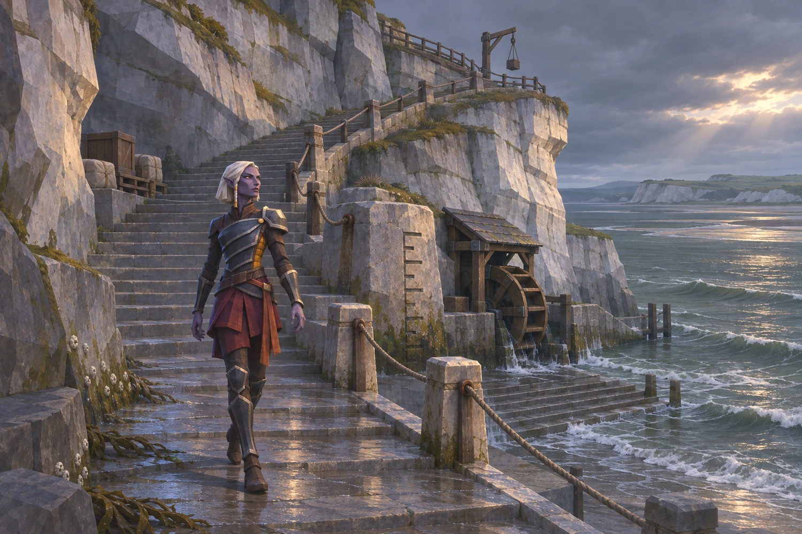
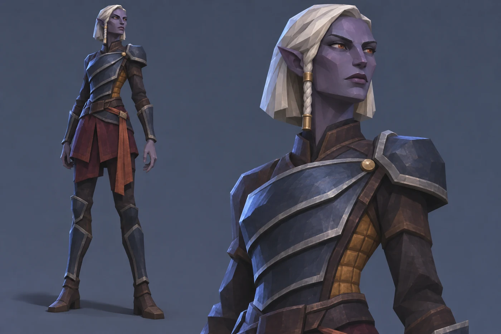
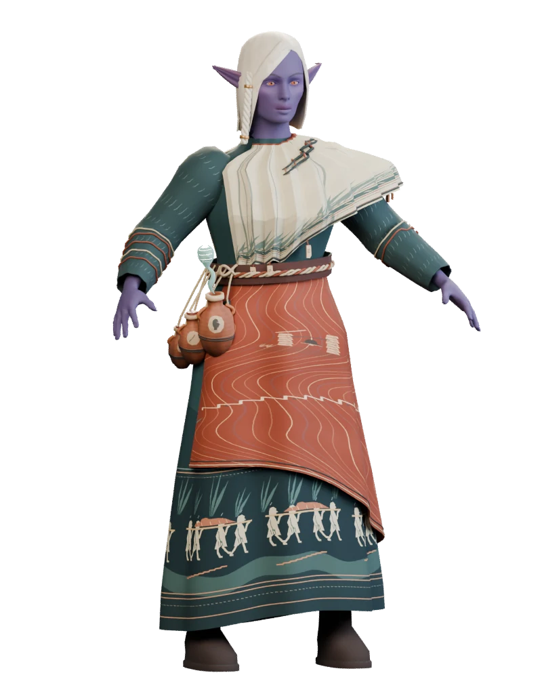
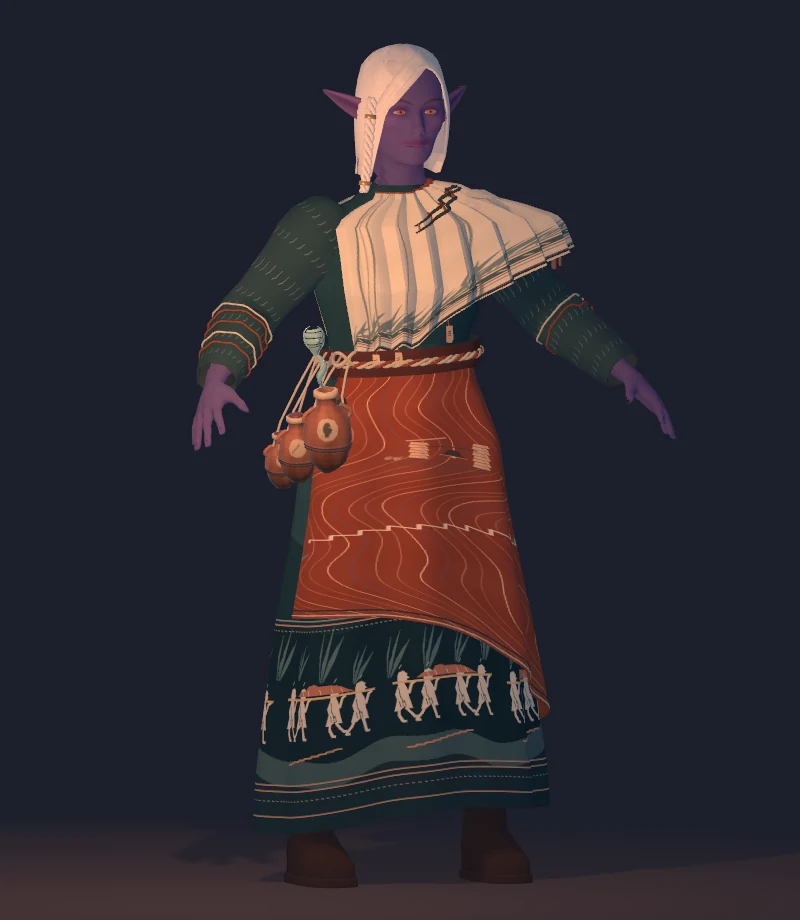
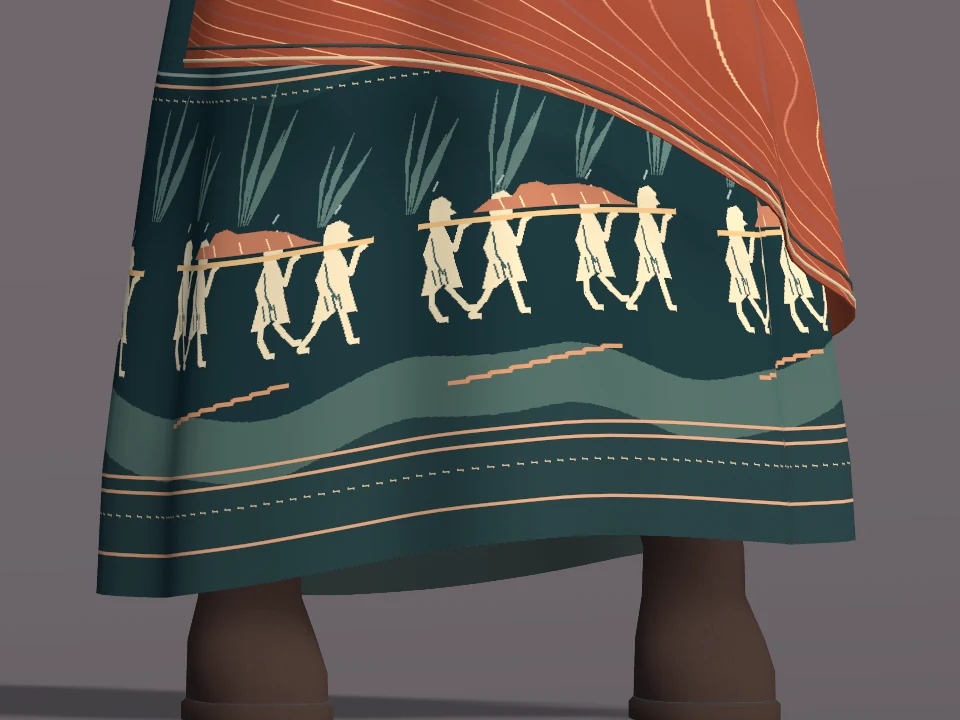
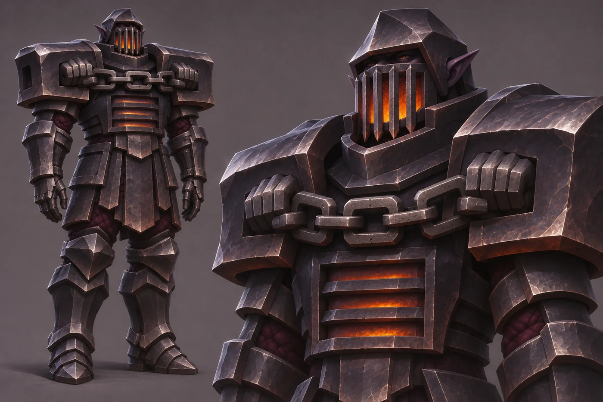
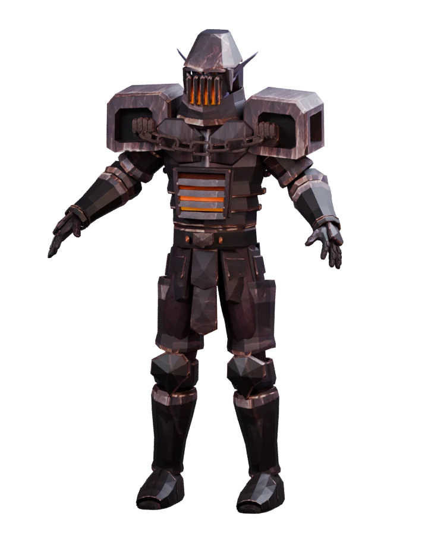
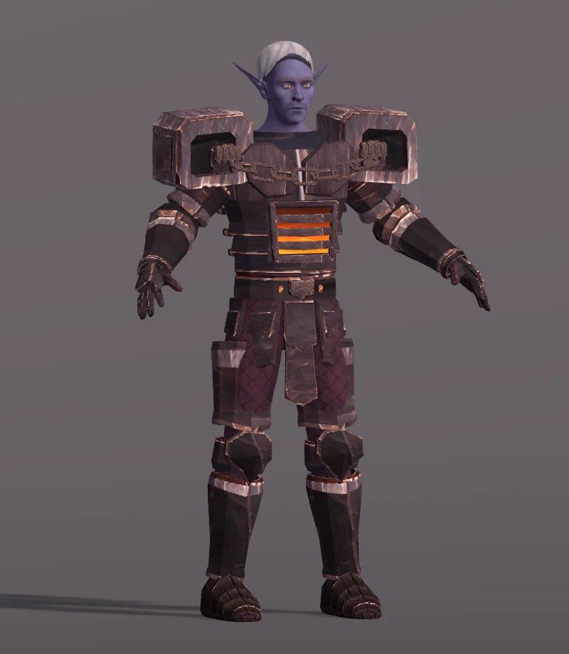
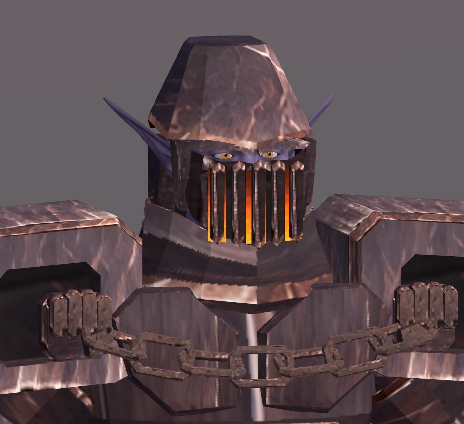

Race studies · The Sill
Dark Elves
On the western funeral road, a cantor listens for a voice in the ebb. In the eastern heatworks, a warden peers through a grille of banked iron.
Two proposed regional roles for the same people. Their homeland and playable traits are still open.

Tidemouth · Knellwater Polder
Ebb Cantor
When the tide falls below the Bell Sill, drowned pallbearers walk the old funeral road against the ebb. A Dark Elf cantor could meet them on the steps. In this robe study she coaxes a voice into a clay jar and seals its throat with wax. Its cut-slip stamp lets her recognize the jar by touch.
Knellwater Polder in the World Atlas





Look closer at the procession print


Cinder Uplands · Flue March
Furnace Warden
At Ventfold, pipewrights channel vent heat through clay-lined runs and send fittings over the saddle. Imagine a Dark Elf warden standing watch while a crew opens a hot channel. The barred hood leaves a sightline down the cooling court. Dark iron frames a narrow orange glow, like the heat seen through a furnace door.
Flue March in the World Atlas





Look through the forge hood

